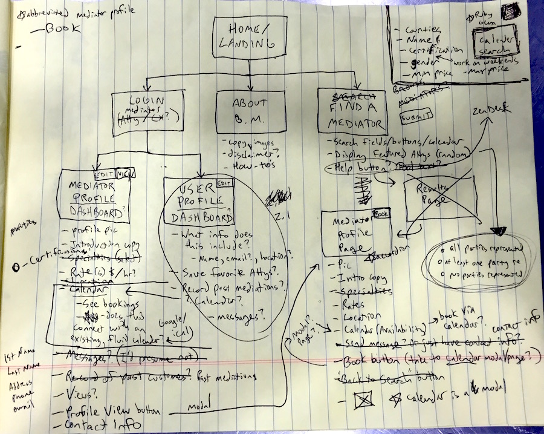
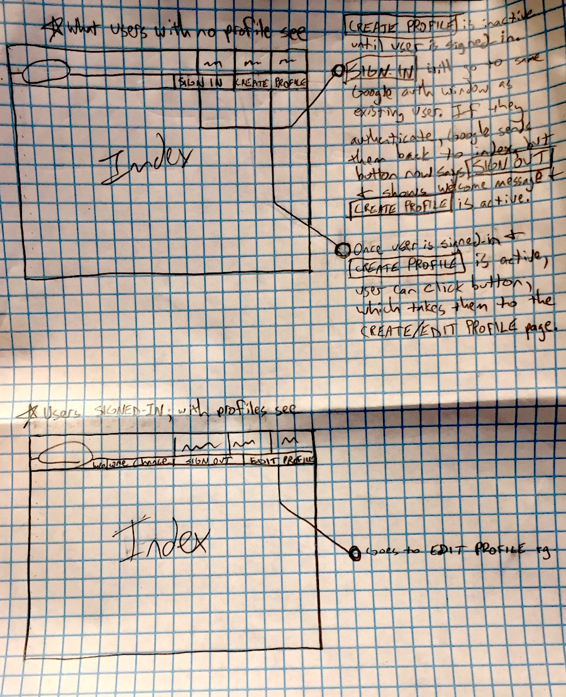
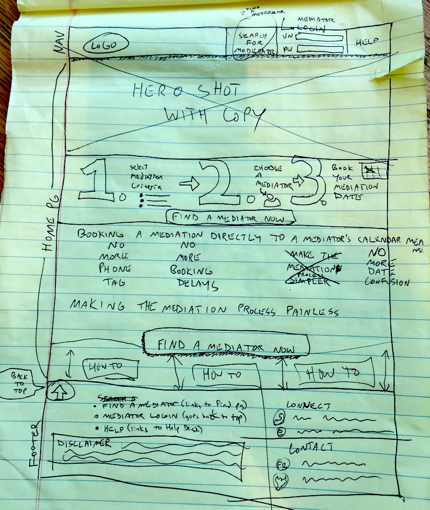
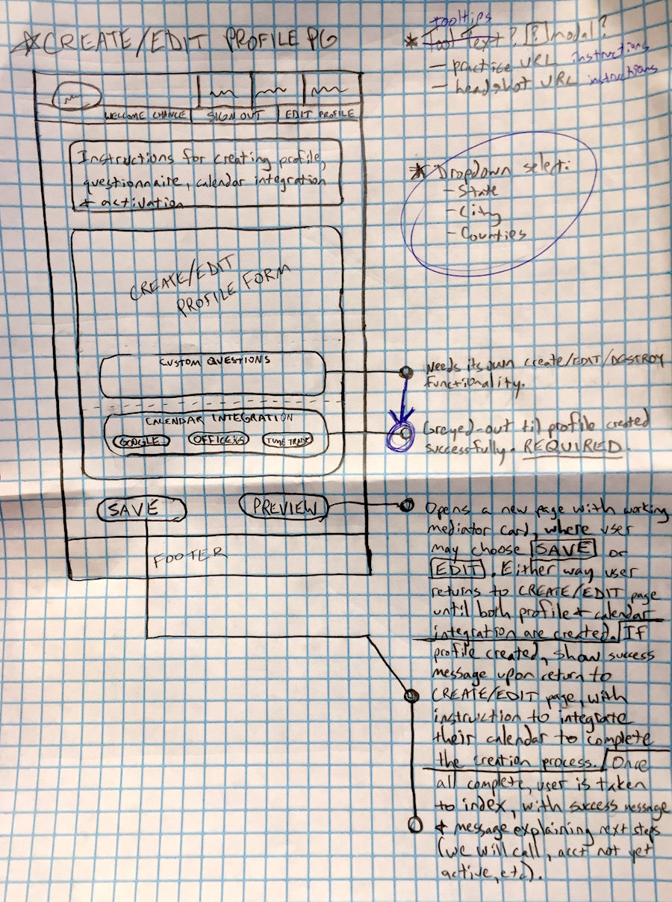

Book Mediation
This was a freelance contract that I worked on from start to finish, from initiation to production release.I worked with a data programmer who assisted with the calendar API interface and some of the site logic.
I worked with the customer directly on the site needs and advised on information architecture, UX design and site branding.
I began the process with a lot of questions and brainstorming, followed by multiple iterations of site wireframes, followed by more questions and more wireframes before really getting into the build.

Once the sitemap was approved, I started to drill down into the button behaviours.

I had to manage hours, functionality and progress to ensure that the project ran on time and on budget.
We used Trello collaboratively as a group to track the progress of the app development and to add, change and rank urgency of tasks and bugs.
I used pencil and paper for wireframing and draft iterations, Ruby on Rails, Bootstrap, HTML and CSS (and a little JavaScript) for the build.
Click here to see BookMediation live
HOME PAGE LAYOUT 
PROFILE CREATION PAGE 
SCREENSHOT OF SEARCH PAGE

Click here to see BookMediation live